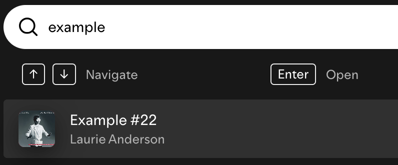

Designing an Accessible Search Bar
Context
Search bars are a very common component found in many of the interfaces that we use on a daily basis.
However, not all search bars are created equal.
In this casye study, I will show some of the accessibility drawbacks with search bars across 3 commonly-used
platforms: GMail, Spotify, and VSCode.
Input Research
To start, let's analyze each platform's search-box trigger states and interactions across keyboard and mouse clicks
- mouse click in triggers active state
- when active state triggered, click outside search triggers disabled state
- search icon click does not alter state
- mouse click in triggers active state
- when active state triggered, click outside search triggers disabled state
- search icon click triggers active state
- mouse click in triggers active state
- when active state triggered, click outside search triggers disabled state
- search icon click
- "/k" command enters search only when accesible settings turned on"
- "enter" key triggers disabled state
- "command +k" enters search regardless of settings"
- "enter" key triggers disabed state
- "/k" command enters search only when accesible settings turned on"
- "enter" key triggers disabled state
Outputs
click triggers active state
search icon click triggers disabled state

click triggers active state

hover trigger highlight
triggers active state
fills in recommendation when user begins to type
keyboard command triggers different active state than mouseclick
Output Observations
Similarities across aplications:
- Disabled state has a list of recommneded search options
Differences across aplications:
- Only Spotify has a visual prompt for keyboard shortcut
- Unlike the others, Spotify's intitial search prompt does not include the word 'search'
Input Observations
Similarities across aplications
- Component is triggered by a mouse click
- Right-clicking does not alter the state
- high learnability because component is accompanied by prompting text
Differences across aplications
- For Gmail, if a user does not click on the center of the component, the recommneded actions drop-down does not appear
- Unlike the others, Spotify's intitial search prompt does not include the word 'search'
Accessibility
Using a screen reader to test outputs across all applications I found some interesting behaviors
As the screenreader test showed, outputs tend to vary significantly based on keyboard-only input. And often, I found that search components are not as friendly to keyboard-only users as most output cues are signaled visually.
Modeling the Interaction
State Model: Mouse User
This state model visualizes how a mouse user would interact with a search component
State Model: Keyboard User
Intentional Tradeoffs State Model
Mouse User Edited State Model
I edited the state model so that if a mouse user clicks the search icon, it will activate the active state.
This is a tradeoff between accesibliltiy for keyboard users because it privillegeds visual cues that we take for granted as "intuitive."
Keyboard User Edited State Model
Drawing from the input and output analysis and accesibility considerations above, I considered having a spacebar trigger back from the disabled state to the active state.:
I chose this tradeoff in order to illustrate how keyboard users are more likely to be familiar wth that command, even though mouse users may mistake that for another command.
Redesign
Thinking with keyboard users in mind, I chose to redesign the GMail search component by adding a popup for the keyboard command that triggers the search component.
This redesign choice would work with a screen reader by reading the suggested command, and takes into account new users and increasingly memorability for screen-reader users